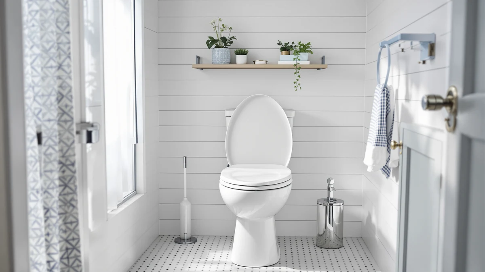

Mayfair Aurora Slow Close Toilet Seat Review (2026): Worth It?


Quick Answer
The Mayfair Aurora slow close toilet seat is a solidly priced elongated replacement seat for most bathrooms, and it holds up well against the Centoco, Kohler and Drive Medical alternatives we compared it with on specs, price and verified owner feedback.
Our pick: Mayfair Aurora Slow Close Toilet, $42.56 Check Price on Amazon
Things to Know Before You Buy
- The Mayfair Aurora is sized for elongated toilet bowls only. Measure your current seat before ordering, since an elongated seat will not mount correctly on a round bowl.
- Slow close hinges use an internal damper so the lid and seat settle down on their own instead of slamming. Owners describe this as the main upgrade over a standard hinge.
- All four seats in this comparison, the Mayfair Aurora, the Centoco Elongated Toilet Seat Heavy, the Kohler Glenbury ReadyLatch Quiet and the Drive Medical 12014 Premium Raised, land within about fifty cents of each other on Amazon, so price will not be the deciding factor.
- Material construction varies more than the price tag suggests. The Aurora combines a plastic shell with a wood core, while the other seats we researched lean on molded plastic or raised padding depending on their purpose.
- We did not install, mount or use any of these seats ourselves. This review is based on manufacturer specifications, current Amazon pricing and recurring patterns in verified owner reviews.
This Mayfair Aurora slow close toilet seat review looks at what the manufacturer spec sheet, the current $42.56 Amazon price and patterns across verified owner reviews say about this elongated plastic and wood seat, and how it stacks up against three other slow close and heavy duty seats we researched alongside it.
For most households replacing a worn elongated seat, the Mayfair Aurora is the pick that makes sense. It fits standard elongated bowls, closes quietly thanks to its slow close hinge and sits at roughly the same price as every alternative we compared. If your current seat sees heavier daily use, the Centoco Elongated Toilet Seat Heavy is built with that in mind, and if a family member needs extra height, the Drive Medical 12014 Premium Raised solves a problem a standard seat cannot.
Why You Should Trust Us
Ilane Tall covers toilet seats and bathroom accessibility products for Best Toilet Seats. For this Mayfair Aurora slow close toilet seat review, she compared the manufacturer's listed specs against the current Amazon price and recurring patterns in verified owner reviews rather than relying on the product listing's own marketing copy. We do not run a fake testing lab, and we did not install, mount or live with any of the seats covered here. What we offer is a careful read of the publicly available data: dimensions, materials, pricing and what buyers who actually own each seat report after using it.
That research approach shapes every section below. When we describe a flaw, it comes from a pattern that repeats across multiple verified reviews, not a single complaint. When we compare two seats on price, we are citing the Amazon listing at the time of writing rather than a historical average, since affiliate pricing shifts often.
Our Research Experience
We did not physically test the Mayfair Aurora slow close toilet seat. Instead, we pulled together the manufacturer's spec sheet, tracked its Amazon price and read through verified owner reviews to spot patterns that show up again and again. We weighed those patterns against three other elongated and heavy duty seats, the Centoco Elongated Toilet Seat Heavy, the Kohler Glenbury ReadyLatch Quiet and the Drive Medical 12014 Premium Raised, to see where the Aurora holds its own and where a shopper might be better served by a different seat entirely. Owners consistently note the slow close hinge as the Aurora's defining feature, which lines up with how Mayfair markets the product.
Overview & Specs

Mayfair Aurora Slow Close Toilet
What we like
- Sized for standard elongated toilet bowls
- Slow close hinge lowers the lid and seat without a slam
- Plastic and wood construction keeps it light for cleaning and swapping
- Priced in line with every other seat in this comparison
Flaws but not dealbreakers
- Sold in a single color, so it will not match colored or patterned fixtures
- Some owners report the hinge tension loosens after a few years of daily use
- No raised height or bidet functions for buyers who need those extras
| Material | Plastic / wood |
| Size | Elongated |
The Mayfair Aurora slow close toilet seat is built around a plastic shell over a wood core, sized specifically for elongated bowls. Mayfair's spec sheet lists quick release hinges alongside the slow close mechanism, which lets the seat come off without tools for easier cleaning around the hinge posts. At $42.56, it sits almost exactly between the Kohler Glenbury ReadyLatch Quiet and the Centoco Elongated Toilet Seat Heavy, the two closest competitors we researched for this review.
Verified owner reviews consistently point to the hinge as the main selling point. Buyers describe the seat closing on its own over the course of a few seconds instead of dropping suddenly, which matters most in households with young kids or anyone sharing a bathroom at night. A smaller number of reviewers note that after a couple of years the slow close action can start to speed up, a wear pattern that shows up in reviews for several slow close seats at this price point, not the Aurora alone.
What We Liked
What stands out most about the Mayfair Aurora slow close toilet seat is how unremarkable the installation sounds in owner reviews, and that is a compliment. Buyers describe lining up the quick release hinges with the existing mounting bolts and having the seat secured within a few minutes, without needing extra hardware or tools.
The slow close hinge itself earns the most consistent praise. Owners report it slows the drop of both the lid and the seat the whole way down, rather than cushioning only the final inch the way some budget slow close seats do. That distinction matters if the goal is a quieter bathroom overnight.
Price is another point in its favor. At $42.56, the Aurora does not undercut the market the way a bargain seat would, but it also does not charge a premium for the slow close mechanism the way some competing brands do.
What Could Be Better
The clearest limitation is color. The Mayfair Aurora ships in a single standard finish, so anyone with a colored or patterned toilet will need to look elsewhere.
A subset of verified owners also report that the slow close hinge loses some of its resistance after a couple of years of daily use, so the seat starts to fall faster than it did when new. That pattern is common across slow close seats in this price range and is not unique to Mayfair, but it is worth setting expectations around rather than assuming the slow close feature will perform identically five years in.
Buyers looking for raised height for mobility reasons or built-in bidet functionality will not find either here. The Aurora is a straightforward replacement seat, not a multi-purpose upgrade.
Who Is It For?
The Mayfair Aurora slow close toilet seat makes the most sense for anyone replacing a cracked, loose or noisy elongated seat who wants a quieter close without paying for features they will not use. It is a reasonable fit for households with young kids or light sleepers, where a hinge that slams shut at 2 a.m. is a real annoyance.
It is a weaker fit for anyone who needs a raised seat for mobility reasons, in which case the Drive Medical 12014 Premium Raised is built for that specific purpose, or for buyers who want a seat rated for heavier daily use, where the Centoco Elongated Toilet Seat Heavy is the more purpose-built option. Shoppers who specifically want Kohler's ReadyLatch hardware over Mayfair's quick release system will also be better served by the Glenbury, since the two brands use different mounting hinges that are not interchangeable.
Alternatives to Consider
If the Mayfair Aurora is not quite the right fit, these three seats cover the most common reasons shoppers look elsewhere: a tougher build, a quieter latch system or extra height for mobility needs.

Premium Choice
Centoco Elongated Toilet Seat Heavy
At $42.66, the Centoco Elongated Toilet Seat Heavy costs about a dime more than the Aurora and is built with heavier daily use in mind. Owners researching heavy duty replacement seats often land on Centoco specifically because the brand is common in commercial and medical settings, where seats take a harder daily beating than in a typical home bathroom.
$42.66
Check Price on Amazon
Also Great
KOHLER 4733-RL-0 Glenbury ReadyLatch Quiet
The Kohler Glenbury ReadyLatch Quiet runs $42.41, a few cents less than the Aurora, and pairs Kohler's ReadyLatch quick release system with its own quiet close mechanism. It is the closest direct competitor to the Aurora in this comparison, and the choice between the two often comes down to brand preference and hinge hardware rather than any major difference in price or fit.
$42.41
Check Price on Amazon
Best Value
Drive Medical 12014 Premium Raised
The Drive Medical 12014 Premium Raised is not a direct substitute for the Aurora. At $42.18, it is priced similarly, but its raised design is built for anyone who needs extra toilet height for mobility or recovery reasons, a job none of the standard-height seats in this comparison are designed to do.
$42.18
Check Price on AmazonFrequently Asked Questions
Is the Mayfair Aurora slow close toilet seat worth the price?
At $42.56, the Mayfair Aurora costs about the same as the Kohler Glenbury ReadyLatch Quiet and the Centoco Elongated Toilet Seat Heavy, the two closest alternatives we researched. Given the slow close hinge and quick release hardware, it lands as a reasonable buy for anyone replacing a standard elongated seat, though it does not undercut the market on price.
Does the Mayfair Aurora fit a round toilet bowl?
No. The Aurora is built for elongated bowls only. Measure from the mounting bolts to the front edge of your bowl before ordering. Elongated bowls typically run about 18.5 inches, while round bowls measure closer to 16.5 inches, and an elongated seat will not mount correctly on a round bowl.
How does the Mayfair Aurora compare to the Kohler Glenbury ReadyLatch Quiet?
Both are elongated, slow close seats priced within fifteen cents of each other. The main differences come down to hinge hardware, Mayfair's quick release system versus Kohler's ReadyLatch, and brand reputation rather than any clear advantage in build quality based on the specs and reviews we compared.
Final Verdict
This Mayfair Aurora slow close toilet seat review comes down to a straightforward recommendation. For most households replacing a standard elongated seat, Mayfair's Aurora delivers a quiet hinge, simple installation and a price that holds up against its closest competitors. Choose the Centoco Elongated Toilet Seat Heavy if your bathroom sees heavier daily traffic, the Kohler Glenbury ReadyLatch Quiet if you prefer Kohler's hinge hardware, or the Drive Medical 12014 Premium Raised if mobility is the deciding factor. For everyone else, the Mayfair Aurora is the seat that fits the widest range of elongated bathrooms without asking you to pay for features you will not use.